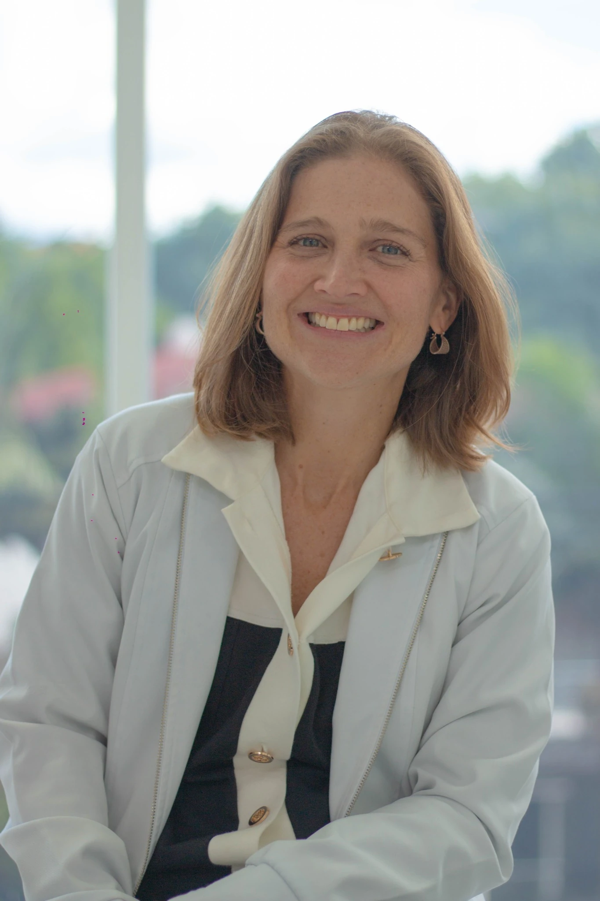
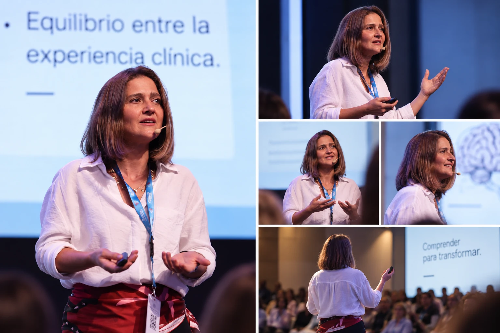
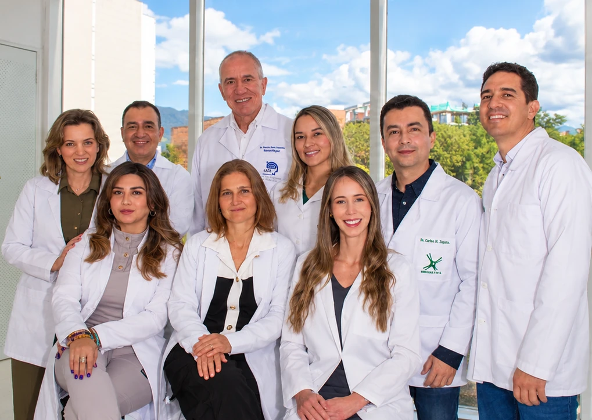

Ciencia, experiencia clínica y una escucha profundamente humana.
Integro la psicología clínica y la neuropsicología para comprender no solo un diagnóstico, sino a la persona completa: su historia, su contexto y la manera particular en que vive lo que le ocurre.
Comprender para transformar.


Más de 15 años acompañando procesos psicológicos y neuropsicológicos.
Mi ejercicio clínico me ha permitido trabajar con adultos que atraviesan condiciones psicológicas, neurológicas y neuropsicológicas, combinando evaluación, intervención y acompañamiento.
En los últimos años he profundizado especialmente en enfermedad de Parkinson y otros trastornos del movimiento, enfermedades neurodegenerativas, dolor crónico, migraña, fibromialgia, evaluación neuropsicológica y procesos de rehabilitación.
También he acompañado a cuidadores y familias, entendiendo que una condición neurológica transforma no solo la vida de quien la vive, sino también la de quienes están a su lado.
Psicología y neuropsicología no son dos mundos separados.
La dimensión emocional, cognitiva y conductual se encuentran constantemente. Comprender esa relación permite construir procesos más claros, personalizados y sostenibles.
Trabajo con herramientas clínicas con respaldo científico sin perder de vista que ninguna prueba o protocolo reemplaza la comprensión de la experiencia particular de cada persona.
Una trayectoria construida entre clínica y neurociencia.
Orientación en neurociencia aplicada · Universidad Maimónides · Buenos Aires, Argentina · 2009.
Universidad Pontificia Bolivariana · Medellín, Colombia · 2006.

La neuropsicología también se construye en equipo.
Mi experiencia clínica ha incluido el trabajo cercano con profesionales de distintas disciplinas, especialmente en procesos neurológicos complejos donde la mirada conjunta permite comprender mejor a cada persona.
La coordinación con otros profesionales puede formar parte del proceso cuando el caso y las necesidades clínicas lo requieren.
Una mirada integral en procesos complejos.
- Enfermedad de Parkinson y otros trastornos del movimiento.
- Procesos pre y postquirúrgicos relacionados con cirugía funcional, dentro de su experiencia clínica especializada.
- Enfermedad de Alzheimer y otras enfermedades neurodegenerativas.
- Demencias frontotemporales, cuerpos de Lewy y demencia vascular.
- Dolor crónico, migraña y fibromialgia.
- Evaluación neuropsicológica, rehabilitación y acompañamiento a cuidadores.